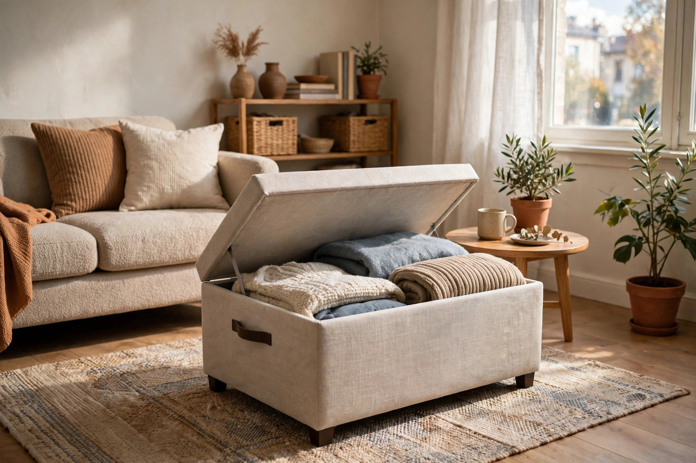

Small Space Storage & Organisation
Small Apartment Storage Ottoman Ideas: Furniture That Hides Things
Intro
A storage ottoman is the hardest-working piece of furniture a small flat can own. It is a seat, a footrest, a coffee table and a cupboard all in one square of floor space — and in a tiny living room, that kind of multi-tasking is worth more than any single-purpose piece. The trick is choosing the right size, the right opening style and the right spot, so it hides clutter instead of becoming another bulky box.
This guide has 12 storage ottoman ideas for small apartments — sizes, placements and what to store inside each one. Most cost under $60, and several cost nothing if you already own an ottoman. Start with the room that needs hiding most, and let one ottoman do three jobs there.

1. The classic cube ottoman by the sofa — $25–$40
A cube ottoman about 40 cm square tucks against the arm of the sofa and holds blankets, remotes and chargers inside. One cube costs about $30 and seats one extra guest when friends visit. Choose a cube with a lift-off lid rather than a hinged one, so the lid doubles as a tray for a cup of tea. Keep the heaviest items at the bottom, so the cube stays stable when someone sits on it.
2. A long bench ottoman at the foot of the bed — $40–$60
A bench ottoman 120 cm long fits at the foot of a double bed and swallows spare bedding, out-of-season clothes and the extra pillows. It costs about $50 and gives you somewhere to sit while you put shoes on. Pick one with a hinged lid that stays open on its own, so both hands are free to fold laundry into it. Measure the gap between bed and wall first: you need at least 50 cm to walk past it.
3. A round pouffe ottoman that doubles as a side table — $20–$35
A round pouffe with a firm, flat top works as a side table when a tray sits on top of it, and as a footrest when the tray comes off. It costs about $25 and fits in the corner a square ottoman cannot. Store board games, magazines and the TV remote inside. A pouffe in a washable fabric survives spills and pets, and it is light enough to move from the living room to the bedroom in seconds.
4. An ottoman with a tray top for the coffee table job — $30–$45
If your living room has no room for both a coffee table and an ottoman, let the ottoman be the table. A firm-topped ottoman with a wooden tray on top holds drinks, books and a phone, and the inside holds the clutter the table would normally display. The tray costs about $10 on its own. Keep the tray slightly smaller than the ottoman top, so it never slides off when someone bumps it.
5. A storage ottoman in the entryway for shoes and bags — $30–$50
A low ottoman by the front door is a seat for putting shoes on and a box for the shoes themselves. One ottoman holds two pairs of shoes, a dog lead and an umbrella, and costs about $40. Choose a wipe-clean top, because entryway ottomans collect muddy marks. Add two small baskets inside — one per person — so shoes never become a mixed pile again.
6. A nesting pair: one big, one small — $35–$55
Two ottomans that nest — a large one and a small one that slides underneath — give you two seats and two storage boxes for the footprint of one. The pair costs about $45. Pull the small one out when guests arrive, and tuck it away when they leave. Store the small ottoman's contents in a fabric bag inside it, so nothing falls out when you slide it in and out.
7. An ottoman that hides the kids' toys — $25–$40
A toy ottoman in the living room ends the nightly toy tidy in one move: everything goes in the box, the lid goes on, and the room looks adult again. It costs about $30. Pick one with a soft, lightweight lid a child can lift safely, and no finger-trapping hinge. Keep a small basket inside for the tiny pieces — Lego, crayons, doll shoes — so they do not vanish to the bottom of the box.
8. A faux-leather ottoman that wipes clean — $35–$55
Fabric ottomans stain; faux leather wipes clean with a damp cloth, which matters in a flat where the ottoman is also a dining seat, a laptop desk and a footrest. A faux-leather cube costs about $45. Store snacks, coasters and the laptop charger inside, and keep a microfibre cloth in the box for quick wipe-downs. Avoid very dark colours in a small room — a tan or cream ottoman looks lighter than black.
9. An ottoman under the window as a reading seat — $40–$60
A wide, low ottoman under the window becomes a reading nook when a cushion and a throw go on top, and the inside holds the books, the reading lamp's spare bulbs and the blanket. It costs about $50. Measure the window sill height first: the ottoman should sit at least 10 cm below it, so the cushion does not block the light. Keep the books you are reading now on top of the pile inside, so the next one is always at hand.
10. A DIY ottoman from a crate and a cushion — $15–$25
A sturdy wooden crate with a cushion tied on top is a storage ottoman for about $20, and it looks handmade rather than cheap. The crate holds shoes, yarn, magazines or winter hats, and the cushion lifts off for access. Sand the edges, paint the crate to match the room, and add four small felt pads underneath so it slides without scratching the floor. This is the best option for renters, because it needs no tools beyond a screwdriver.
11. A rolling ottoman for a room that changes shape — $40–$60
An ottoman on four small castor wheels rolls from the sofa to the dining table to the bedroom, carrying its contents with it. It costs about $50. Lock two of the wheels, so it stays put when someone sits on it. Store the things you need in every room — the first-aid kit, the sewing kit, the phone chargers — and roll the box to wherever you are. In a studio flat, this one box replaces three small storage units.
12. One ottoman per room, one job each — $0
The cheapest idea costs nothing: give the ottoman you already own a single, named job. The living-room ottoman holds only blankets. The bedroom ottoman holds only spare bedding. When an ottoman has one job, you always know what is inside it, and you stop opening it to hunt. Write the job on a small label inside the lid. In a small flat, a labelled box beats a bigger box every time.
Conclusion
A storage ottoman earns its floor space by doing three jobs at once — seat, table and cupboard — and the best one for your flat is the one that fits the gap you already have, not the biggest one in the shop. A cube by the sofa, a bench at the foot of the bed or a rolling box in a studio can each hide a whole category of clutter. Pick one spot, give the ottoman one job, and the room will feel bigger by tonight.
Budget recap
- Cube ottoman by the sofa: ~$30 - Bench ottoman at the foot of the bed: ~$50 - DIY crate ottoman: ~$20
Total for one hard-working ottoman: ~$20–$60 — or $0 by giving the one you own a single job.
Pinterest pin titles
- Small Apartment Storage Ottoman Ideas — Furniture That Hides Things
- 12 Ottoman Ideas That Hide Clutter (and Seat an Extra Guest)
- One Ottoman, Three Jobs: 12 Storage Ideas for Tiny Flats